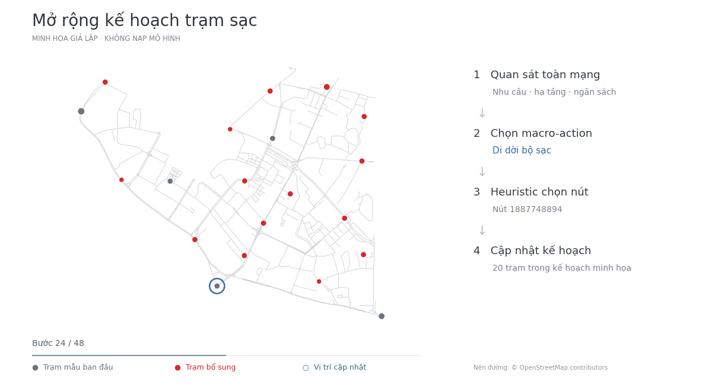
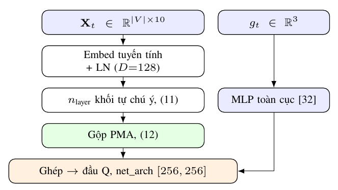

VNICT 2026 · Trường Đại học Hà Nội
Học tăng cường sâu tích hợp cơ chế tự chú ý và thông tin lưới điện cho bài toán quy hoạch trạm sạc xe điện
Grid-aware EV charging station planning with deep reinforcement learning
Trường Đại học Hà Nội
Hội thảo quốc gia lần thứ XXIX: Một số vấn đề chọn lọc của Công nghệ thông tin và truyền thông
Hà Nội, 7–8 tháng 11 năm 2026
res/; điểm đỏ biểu thị trạm sạc, kích thước điểm phản ánh công suất lắp đặt.Tóm tắt
Quy hoạch trạm sạc xe điện cần đồng thời đáp ứng nhu cầu sử dụng, giảm chi phí bất tiện và phù hợp với khả năng cung cấp của lưới điện đô thị. Một trạm mới không chỉ bổ sung công suất: nó còn thay đổi nhu cầu ở các vị trí lân cận và dung lượng còn lại của lưới.
Nghiên cứu mô hình hóa quá trình mở rộng hạ tầng thành bài toán quyết định Markov. Chính sách DQN sử dụng bộ mã hóa self-attention và Pooling by Multi-head Attention (PMA) để tổng hợp thông tin toàn mạng thành biểu diễn có kích thước cố định. Tác tử chọn một trong năm chiến lược mức cao, sau đó heuristic xác định vị trí cụ thể.
Trên thí nghiệm Đống Đa được báo cáo trong bài báo, phương pháp đề xuất đạt hàm mục tiêu 224,7 ± 0,3 so với mốc hạ tầng hiện hữu bằng 100, sử dụng 90,1% ngân sách và không gây quá tải thanh cái trong mô hình lưới điện mô phỏng.
Một quá trình ra quyết định tuần tự
Quan sát trạng thái toàn mạng, chọn chiến lược, triển khai một thay đổi và cập nhật trạng thái. Chu trình này được lặp lại trong giới hạn ngân sách.

Đọc hình: điểm xám là trạm mẫu ban đầu; điểm đỏ là trạm bổ sung; vòng xanh đánh dấu vị trí đang được cập nhật. Năm macro-action bao gồm tạo mới theo lợi ích hoặc nhu cầu, bổ sung bộ sạc theo lợi ích hoặc nhu cầu, và di dời bộ sạc giữa các trạm.
Nhìn toàn mạng, quyết định từng bước
Trạng thái gồm ma trận Xt với 10 đặc trưng cho mỗi nút và vector gt với ba đặc trưng toàn cục: ngân sách còn lại, tiến độ episode và mức cải thiện điểm. Self-attention trao đổi thông tin giữa mọi cặp nút; PMA tổng hợp các embedding về kích thước không phụ thuộc số nút.

Policy chọn chiến lược, heuristic chọn vị trí
Đầu Q của DQN chọn một macro-action thay vì chọn trực tiếp tọa độ. Heuristic tương ứng xác định nút để tạo mới, bổ sung hoặc di dời bộ sạc. Sau mỗi hành động, môi trường cập nhật nhu cầu động, công suất trạm và dư địa lưới điện.
Cân bằng chất lượng phục vụ và tác động lưới
Hàm mục tiêu kết hợp lợi ích phục vụ, chi phí di chuyển/chờ/sạc và công bằng không gian, rồi trừ phạt khoảng cách đấu nối và quá tải. Phần thưởng mỗi bước phản ánh thay đổi hàm mục tiêu, cộng thưởng khi đạt điểm tốt nhất mới trong episode; reward và R(p) là hai đại lượng khác nhau.
Kết quả trên quận Đống Đa
Bài báo sử dụng mạng đường bộ OpenStreetMap với 639 nút và mô hình lưới điện gồm 18 thanh cái. Các phương pháp dùng cùng hạ tầng ban đầu, ngân sách và đồ thị. DQN và giải thuật di truyền được đánh giá qua năm lần chạy độc lập, báo cáo mean ± std.
| Phương pháp | R(p) ↑ | Lợi ích ↑ | Chi phí ↓ | Công bằng ↑ | Quá tải ↓ | Số trạm | Ngân sách (%) |
|---|---|---|---|---|---|---|---|
| Hạ tầng hiện hữu | 100,0 | 100,0 | 100,0 | 100,0 | 0 | 5 | 0,0 |
| Greedy-Benefit | 150,3 | 191,9 | 56,8 | 15,1 | 1 | 47 | 56,6 |
| Greedy-Demand | 210,8 | 215,6 | 66,1 | 41,2 | 1 | 67 | 98,4 |
| Giải thuật di truyền | 217,1 ± 3,8 | 212,0 ± 3,9 | 45,2 ± 1,3 | 40,9 ± 0,4 | 0 | 65 | 98,0 |
| DQN (đề xuất) | 224,7 ± 0,3 | 232,9 ± 1,9 | 48,3 ± 0,4 | 47,8 ± 1,4 | 0 | 46 | 90,1 |
Số liệu gốc: Bảng III, trang 5. R(p), lợi ích, chi phí và công bằng quy về phần trăm so với hạ tầng hiện hữu (= 100). Quá tải là số thanh cái; ↑ cao hơn tốt hơn, ↓ thấp hơn tốt hơn. ± biểu thị độ lệch chuẩn.
res/, giữ nguyên màu và độ phân giải gốc. Bấm vào hình để xem chi tiết. Các ảnh này không được dùng để suy ngược số liệu mean ± std trong Bảng III; chưa có metadata để đối chiếu từng ảnh với năm lần chạy của bài báo.Vai trò của thông tin lưới điện và PMA
Trong các đối sánh chính, DQN đạt hàm mục tiêu tổng hợp cao nhất, với ít trạm hơn và ngân sách thấp hơn GA. Phân tích loại bỏ thành phần cho thấy bỏ thông tin lưới dẫn tới hai thanh cái quá tải và giảm công bằng.
| Mô hình | R(p) ↑ | Lợi ích ↑ | Công bằng ↑ | Quá tải ↓ |
|---|---|---|---|---|
| DQN đầy đủ | 224,7 ± 0,3 | 232,9 ± 1,9 | 47,8 ± 1,4 | 0 |
| Không xét lưới | 220,7 ± 0,6 | 237,4 ± 1,7 | 30,7 ± 1,8 | 2 |
| Mean Pooling | 225,4 ± 1,7 | 235,6 ± 3,3 | 46,3 ± 3,5 | 0 |
| Không chú ý (MLP) | 222,5 ± 2,6 | 220,8 ± 4,9 | 43,7 ± 5,2 | 0 |
Nguồn: Bảng IV, trang 5. Mean Pooling có điểm trung bình nhỉnh hơn mô hình đầy đủ (225,4 so với 224,7), nhưng độ lệch chuẩn cao hơn (1,7 so với 0,3). Kết quả hỗ trợ nhận xét về tính ổn định của PMA, không phải điểm trung bình cao nhất trong ablation.
Giới hạn và hướng phát triển
Lưới phân phối và phụ tải nền được xây dựng từ dữ liệu mô phỏng, chưa phải dữ liệu vận hành thực tế. Thực nghiệm hiện giới hạn ở một quận; cần đánh giá trên nhiều mạng đường bộ, tích hợp dữ liệu lưới thực và kiểm tra khả năng chuyển giao chính sách.